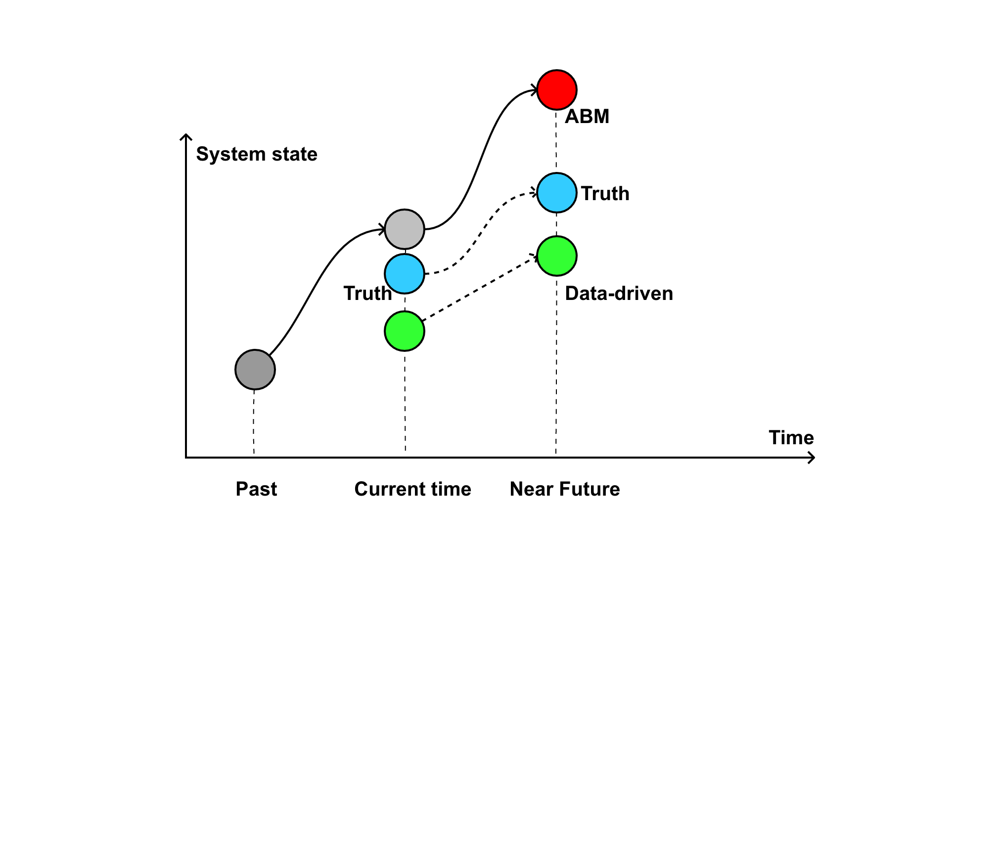
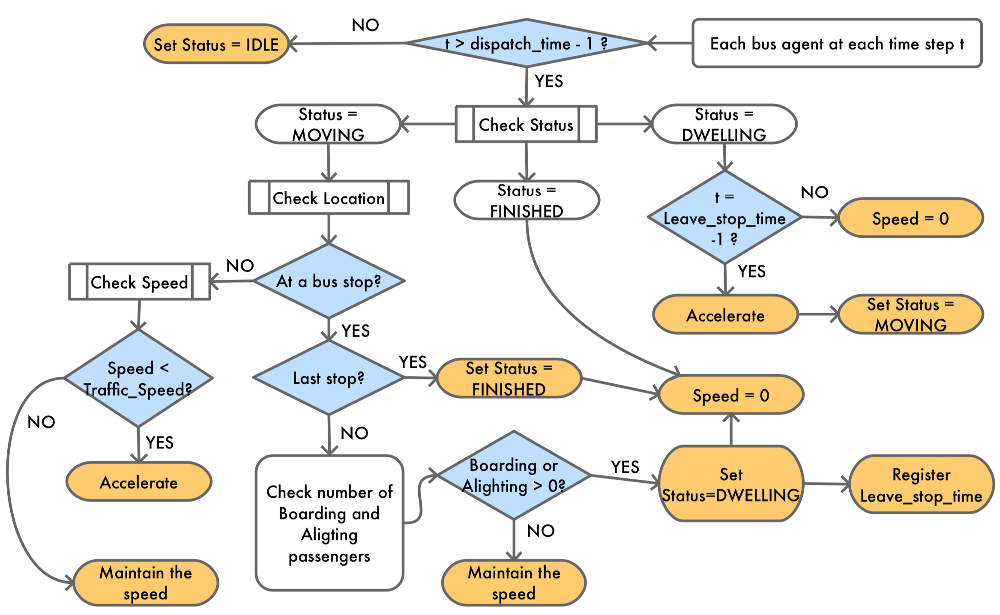
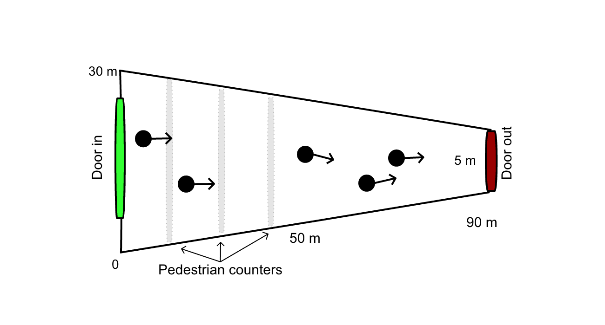
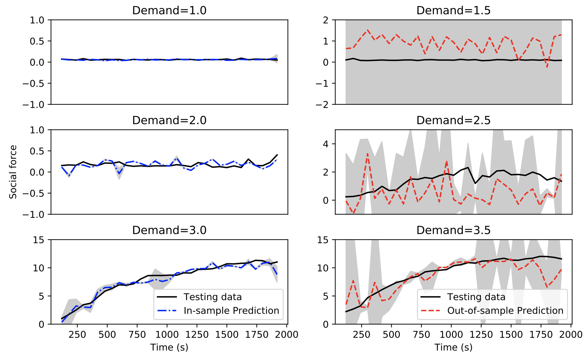

Data-driven cities: bringing together machine learning and city simulation
Minh Kieu, Nick Malleson, Alison Heppenstall, Jon Ward
University of Leeds
m.l.kieu@leeds.ac.uk
These slides:
https://leminhkieu.github.io/p/2019-Bristol-UrbanAnalytics.html
Cities are changing rapidly, forcing policy makers to make decision faster and more frequent
How do science support policy makers?
We need a platform to evaluate future policies:
Transport – how to reduce congestion?
Pollution – who is being exposed? Where are the hotspots?
Economy – can we attract more people to our city centre?
Health - can we encourage more active travel?
Data of individuals are key to explain the urban dynamics
Smart cities and the data deluge
Abundance of data for monitoring of cities, but limited forecasting. E.g.:
MassDOT Real Time Traffic Management system (Bond and Kanaan, 2015)
Centro De Operacoes Prefeitura Do Rio (in Rio de Janeiro)
Machine learning will probably help
E.g. short-term traffic forecasting (Vlahogianni et al. 2014)
But black box is a drawback - How to run diverse scenarios?
How to combine messy, biased, disparate data into a system that can evaluate 'what-if' scenarios?
Uncertainty
The reality is dynamic: Non-linear models predict near future well, but diverge over time.
The reality is stochastic: No set of parameters would perfectly explain the real system.
There is no systematic mechanism to incorporate new data into agent-based models
Data Assimilation for Agent-Based Models
Improve estimates of the true system state by combining noisy, real-world observations and model estimates of the system state
Data Assimilation for Agent-Based Models
Improve estimates of the true system state by combining noisy, real-world observations and model estimates of the system state
Data Assimilation for Agent-Based Models
Improve estimates of the true system state by combining noisy, real-world observations and model estimates of the system state
ERC Project: Data Assimilation for Agent-Based Models (DUST)

Project info:
https://dust.leeds.ac.uk/
Example 1
Bus Simulation with a Particle Filter
Context: simulate bus routes in real time
We have GPS bus positions, but to make good term forecasts we need to be able to infer other factors
Number of people waiting at bus stops
Number of people on the bus
Surrounding traffic levels
Etc.
Aim: test a particle filter as the means of assimilating real-time GPS positions into a model.
Data Assimilation on Bus Simulation
Bus Simulation
LM Kieu, N Malleson, A Heppenstall (2019) Dealing with uncertainty in agent-based models for short-term predictions , arXiv preprint arXiv:1908.08288
LM Kieu, D Ngoduy, N Malleson, E Chung (2019) A stochastic schedule-following simulation model of bus routes , Transportmetrica B: Transport Dynamics 7 (1), 1588-1610
Bus Simulation - No Data Assimilation

Particle Filter on BusSim
Particle Filter on BusSim
Particle Filter on BusSim
Particle Filter on BusSim
Bus Simulation with a Particle Filter
Example 2
Crowd Simulation

Context: simulate a crowd in real time
What methods can we use to assimilate data?
How much data do we need?
Track every individual?
Track some individuals?
Just aggregate counts (e.g. number of people passing a footfall camera)
Case study: a simple, hypothetical train station (Station Sim)
Crowd Simulation with a Particle Filter

N Malleson, K Minors, LM Kieu, JA Ward, AA West, A Heppenstall (2019) Simulating Crowds in Real Time with Agent-Based Modelling and a Particle Filter, arXiv preprint arXiv:1909.09397
Unsccented Kalman Filter on StationSim
Unsccented Kalman Filter on StationSim
Prediction of Observed vs Unobserved Agents
Example 3
Emulators of Agent-Based Models

Context: ABMs are generally too expensive to run in real-time
Can we build another model to represent the ABM in real-time?
What methods are suitable?
How good these surrogate models need to be?
Case study: Station Sim but using Social Force Model
StationSim with Helbing's Social Force model
Emulator to enable the use of ABMs in real-time
Input: Aggregated pedestrian counts at each gate
Output: Mean Social Force at each gate
Run the ABM multiple times with different demand to train the Emulator
Emulator of StationSim model: Gaussian Process Regression
Emulator of StationSim model: Random Forest Regression

Symposium: Agent-Based Modelling of Urban Systems (ABMUS)
Auckland, New Zealand (May 2020)
Pre-symposium workshop in Melbourne with policy makers
Information to be announced in SIMSOC and mailing list